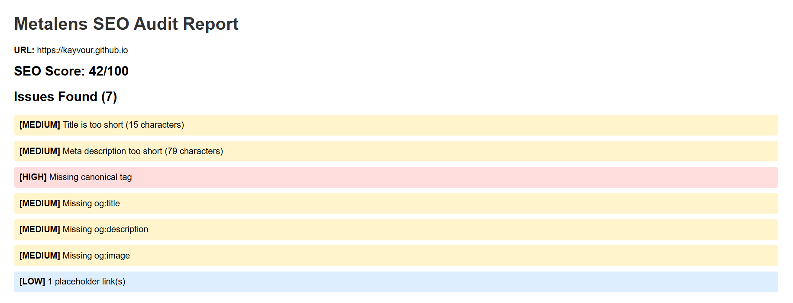

About
MetaLens crawls websites, detects technical SEO issues, calculates an SEO score, and generates HTML and JSON reports for developers and website owners.
Features
Website Crawling
Crawl multiple internal pages automatically.
SEO Score
Generate an overall SEO score for every page.
Metadata Checks
Validate titles, descriptions, canonicals and H1 tags.
Open Graph
Detect missing Open Graph metadata.
Link Auditing
Identify missing, empty and placeholder links.
Reports
Generate HTML and JSON audit reports.
Demo
Auditing website...
Audit Summary
SEO Score
82/100
Pages Crawled
8
Issues Found
14
Sample Issues
- Missing canonical tag
- Missing Open Graph image
- Meta description too short
- 6 images missing alt text
Sample HTML Report

How It Works
Website
│
▼
Crawler
│
▼
HTML Parser
│
▼
SEO Checks
│
▼
Score Engine
│
▼
Reports
Installation
git clone https://github.com/kayvour/MetaLens.git cd MetaLens pip install -r requirements.txt python src/main.py